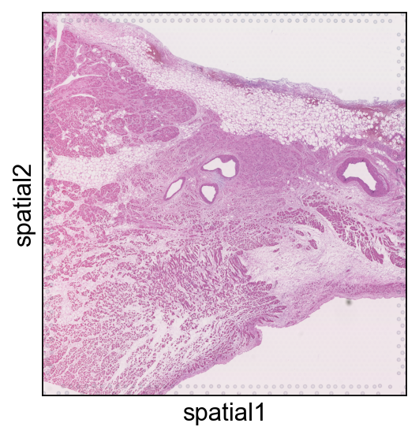
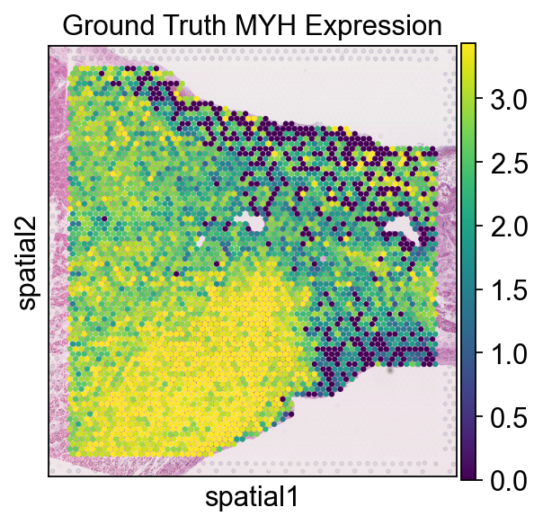
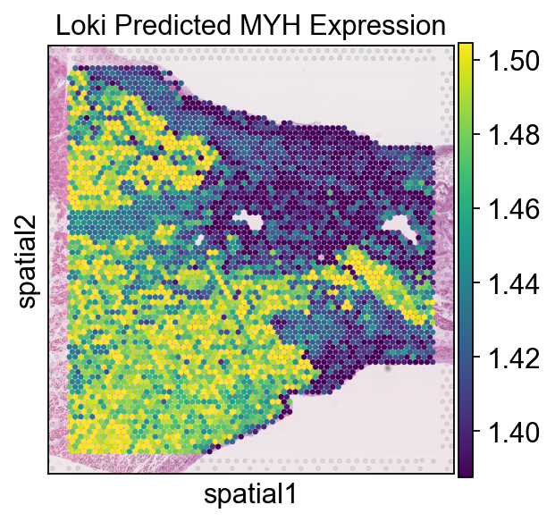

Loki PredEx
This notebook demonstrates how to run Loki PredEx on the normal human heart dataset. It takes about 1 min to run this notebook on MacBook Pro.
[1]:
import scanpy as sc
import pandas as pd
import numpy as np
import os
import loki.predex
sc.settings.set_figure_params(dpi=100, facecolor="white")
We provide the image-ST similarity matrix generated from the OmiCLIP model. The sample data and embeddings are stored in the directory data/loki_predex/, which can be donwloaded from Google Drive link.
Here is a list of the files that are needed to run the ST gene expression prediction on the human heart dataset:
.
├── similarity_matrix
│ └── image_text_similarity.npy
├── training_data
│ ├── all_shared_genes.txt
│ ├── combined_expression_matrix.npy
│ ├── combined_obs.npy
│ └── train_df.csv
└── validation_data
├── HCAHeartST11702009.h5ad
├── top300_gene_list.npy
└── val_df.csv
[2]:
data_path = '../data/loki_predex/'
[3]:
adata = sc.read_h5ad(os.path.join(data_path, 'validation_data', 'HCAHeartST11702009.h5ad'))
genelist = list(np.load(os.path.join(data_path, 'validation_data', 'top300_gene_list.npy'),allow_pickle=True))
ad = adata[:, adata.var_names.isin(genelist)]
sc.pl.spatial(adata, img_key="hires", show=False, spot_size=10)
del adata
val_df = pd.read_csv(os.path.join(data_path, 'validation_data', 'val_df.csv'), index_col=0)
val_spots = val_df.index.tolist()

Loki PredEx by H&E image
Use Loki PredEx to predict ST gene expression from H&E image.
[4]:
combined_expression_array = np.load(os.path.join(data_path, 'training_data', 'combined_expression_matrix.npy'))
combined_obs_array = np.load(os.path.join(data_path,'training_data', 'combined_obs.npy'))
train_df = pd.read_csv(os.path.join(data_path, 'training_data', 'train_df.csv'), index_col=0)
train_spots = train_df.index.tolist()
with open(os.path.join(data_path, 'training_data', 'all_shared_genes.txt'), 'r') as f:
shared_genes = [line.strip() for line in f]
train_indices = np.isin(combined_obs_array, train_spots)
val_indices = np.isin(combined_obs_array, val_spots)
train_data = combined_expression_array[train_indices, :]
val_data = combined_expression_array[val_indices, :]
del combined_expression_array
del train_df
[5]:
image_text_similarity = np.load(os.path.join(data_path, 'similarity_matrix', 'image_text_similarity.npy'))
predicted_image_text_matrix = loki.predex.predict_st_gene_expr(image_text_similarity, train_data)
prediction = pd.DataFrame(predicted_image_text_matrix, index=val_df.index,columns=shared_genes)
predict_data = prediction[genelist]
predict_data = predict_data.loc[ad.obs_names]
predict_data
[5]:
| APLP2 | BEX3 | KIF1C | NFKBIA | NUCB1 | JUN | PSMD8 | PTGES3 | EEF1B2 | HADHA | ... | TTN | CRYAB | DES | MYH6 | TNNT2 | TPM1 | MYL7 | ACTC1 | MB | NPPA | |
|---|---|---|---|---|---|---|---|---|---|---|---|---|---|---|---|---|---|---|---|---|---|
| spot_id | |||||||||||||||||||||
| HCAHeartST11702009_AAACAACGAATAGTTC-1 | 0.873993 | 0.570633 | 0.809642 | 0.502104 | 0.748403 | 0.493271 | 0.748796 | 0.549227 | 0.932378 | 1.023527 | ... | 3.124240 | 3.412881 | 3.790170 | 2.929568 | 3.479691 | 3.594158 | 3.225036 | 3.629994 | 4.128861 | 3.029146 |
| HCAHeartST11702009_AAACAAGTATCTCCCA-1 | 0.886108 | 0.600569 | 0.823685 | 0.526464 | 0.767610 | 0.504052 | 0.797189 | 0.567454 | 0.975902 | 1.036880 | ... | 3.118218 | 3.477846 | 3.808141 | 2.917475 | 3.476100 | 3.638908 | 3.224683 | 3.681861 | 4.140285 | 3.016911 |
| HCAHeartST11702009_AAACACCAATAACTGC-1 | 0.888327 | 0.585750 | 0.832512 | 0.477843 | 0.753783 | 0.492416 | 0.765825 | 0.541675 | 0.917877 | 1.077905 | ... | 3.162872 | 3.472018 | 3.868768 | 2.871716 | 3.553461 | 3.674515 | 3.118482 | 3.696733 | 4.202581 | 2.791825 |
| HCAHeartST11702009_AAACAGAGCGACTCCT-1 | 0.856133 | 0.540058 | 0.783130 | 0.480710 | 0.730232 | 0.474532 | 0.718386 | 0.533094 | 0.908748 | 1.009164 | ... | 3.102248 | 3.388016 | 3.767592 | 2.832028 | 3.452923 | 3.571324 | 3.136117 | 3.597626 | 4.109611 | 2.900072 |
| HCAHeartST11702009_AAACAGCTTTCAGAAG-1 | 0.874205 | 0.568552 | 0.813926 | 0.492851 | 0.746465 | 0.484543 | 0.756364 | 0.541125 | 0.933277 | 1.039306 | ... | 3.139337 | 3.427375 | 3.812937 | 2.882198 | 3.484470 | 3.606930 | 3.169055 | 3.631085 | 4.145370 | 2.900765 |
| ... | ... | ... | ... | ... | ... | ... | ... | ... | ... | ... | ... | ... | ... | ... | ... | ... | ... | ... | ... | ... | ... |
| HCAHeartST11702009_TTGTTGTGTGTCAAGA-1 | 0.894089 | 0.579132 | 0.829608 | 0.511592 | 0.768178 | 0.499199 | 0.772891 | 0.574577 | 0.942139 | 1.041307 | ... | 3.096955 | 3.393776 | 3.846852 | 2.862902 | 3.527897 | 3.593799 | 3.242400 | 3.615206 | 4.115737 | 2.915656 |
| HCAHeartST11702009_TTGTTTCACATCCAGG-1 | 0.892658 | 0.595588 | 0.840894 | 0.474780 | 0.756744 | 0.500931 | 0.773873 | 0.546936 | 0.911552 | 1.095047 | ... | 3.193938 | 3.510115 | 3.897340 | 2.844283 | 3.585431 | 3.717606 | 3.070820 | 3.733671 | 4.232878 | 2.710185 |
| HCAHeartST11702009_TTGTTTCATTAGTCTA-1 | 0.885468 | 0.584947 | 0.826959 | 0.487564 | 0.755719 | 0.489815 | 0.775463 | 0.542257 | 0.937204 | 1.073276 | ... | 3.143954 | 3.479612 | 3.848481 | 2.857775 | 3.520583 | 3.666855 | 3.107396 | 3.691140 | 4.184914 | 2.785052 |
| HCAHeartST11702009_TTGTTTCCATACAACT-1 | 0.887217 | 0.581479 | 0.830952 | 0.470430 | 0.749562 | 0.489309 | 0.763408 | 0.535830 | 0.911418 | 1.086841 | ... | 3.169456 | 3.481936 | 3.877080 | 2.833387 | 3.561459 | 3.688138 | 3.077145 | 3.700656 | 4.210742 | 2.712910 |
| HCAHeartST11702009_TTGTTTGTATTACACG-1 | 0.880530 | 0.587205 | 0.813241 | 0.511512 | 0.758651 | 0.492912 | 0.782527 | 0.551987 | 0.965851 | 1.043346 | ... | 3.107597 | 3.463045 | 3.794714 | 2.887498 | 3.463999 | 3.630590 | 3.172147 | 3.669116 | 4.137131 | 2.924880 |
3982 rows × 300 columns
[6]:
ad.layers['original'] = ad.X
ad.layers['loki'] = predict_data
/var/folders/f1/0m_1r9dx73dff178jp2t41900000gp/T/ipykernel_27402/3605322198.py:1: ImplicitModificationWarning: Setting element `.layers['original']` of view, initializing view as actual.
ad.layers['original'] = ad.X
[7]:
ad.X=ad.layers['original']
sc.pl.spatial(ad, img_key="hires", color='MYH7', size=1.5, vmax='p90', vmin='p10')

[8]:
ad.X = ad.layers['loki']
sc.pl.spatial(ad, img_key="hires", color='MYH7', size=1.5, vmax='p90', vmin='p10')

[ ]: